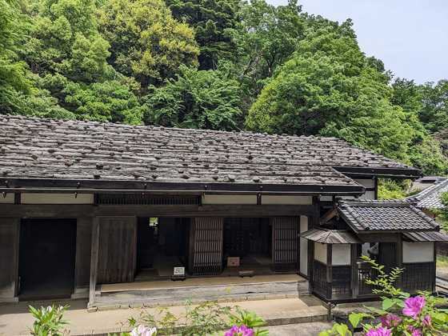
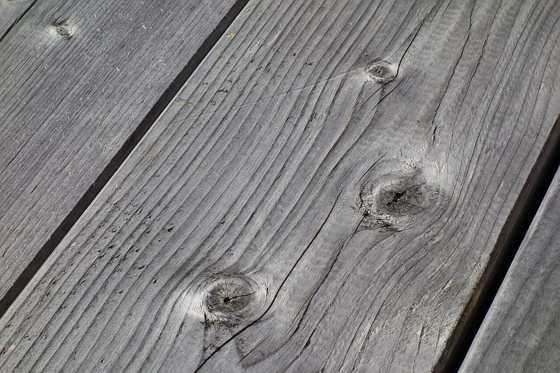
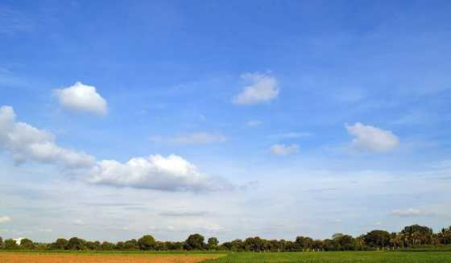
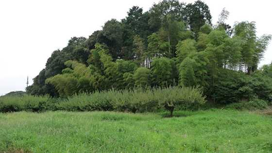
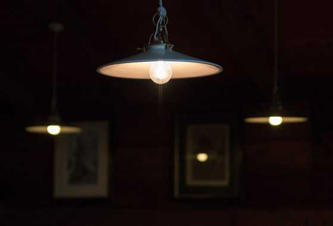
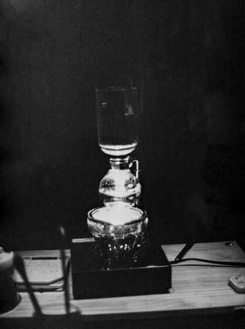
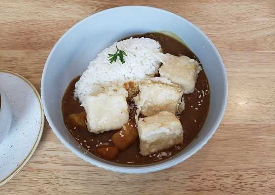

福島県二本松市木幡の喫茶店
とうふ屋だった場所で、
ほっと一息。
祖父母と母が営んでいた豆腐店を、喫茶店に。喫茶Shiroは、そんな建物から生まれたお店です。
お店の由来と想い
豆腐店から、喫茶店へ。
紹介ページによると、喫茶Shiroは、祖父母と母が営んでいた豆腐店を改装してつくられた喫茶店です。お店のInstagramには、豆腐店をやめてから長い年月がたち、眠っていた豆腐の製造場が喫茶店として生まれ変わった、という趣旨の投稿があります。
福島経済新聞では、4月27日に二本松市木幡でオープンしたと紹介されています(2025年5月の掲載記事)。店内は、あたたかみのあるアンティーク家具で統一され、「ほっと一息 ひと休みしてくださいね」と案内されています。看板犬の「きなこさん」が迎えてくれるとも紹介されています(Instagramのアカウント名にも「きなこさん」の名があります)。
お店の名前「Shiro」の意味は、確認できませんでした。以下は制作側のイメージです: 豆腐の白さと「ほっと一息」のやわらかな雰囲気から、このページでは白とやさしい木の色を基調にしています。お店の公式な説明ではありません。

- とうふ屋だった建物祖父母と母が営んでいた豆腐店が、お店の出発点です。
- 喫茶店として再出発眠っていた製造場が、喫茶店に生まれ変わりました。
- ほっと一息アンティーク家具に囲まれて、ひと休みできる空間です。



写真はすべてフリー素材のイメージです。お店・木幡の実際の風景ではありません。
メニュー
サイフォンコーヒーと、ソフトクリーム。
紹介ページで確認できた提供内容です。価格・そのほかのメニューは変わることがあるため、掲載せず「準備中」としています。

サイフォンコーヒー
サイフォンで淹れるコーヒーが紹介されています。
価格 準備中
ソフトクリーム
地元企業「あだたらのちち」の「きよミルク」を使ったソフトクリームが紹介されています。
価格 準備中
そのほかのメニュー
詳しくはInstagramをご覧ください。
準備中



写真はフリー素材のイメージです。喫茶Shiroの実際の様子・メニューではありません。
口コミ
こんなふうに過ごせたら。
以下は制作側が考えたイメージ例です。実在のお客様の声ではありません。
イメージ例古い家具に囲まれて、サイフォンのコーヒーをゆっくり。時間の流れがやわらかく感じました。
イメージ例ここがとうふ屋さんだったと知って、なんだか温かい気持ちに。ソフトクリームもおいしかったです。
イメージ例ドライブの途中に寄りました。のんびりした木幡の空気と、ほっとひと息できる一杯に癒されました。
アクセス・ご案内
お店のこと(確認できたものだけ)
| 所在地 | 〒964-0203 福島県二本松市木幡松木下51-2 |
|---|---|
| 電話 | 準備中 |
| 営業時間 | 準備中 |
| 定休日 | 準備中 |
| SNS | Instagram @shiro_kinakosan |
営業時間・定休日は変わることがあるため掲載していません。最新情報はInstagramでご確認ください。
写真クレジット
使用した写真
このページの写真はフリー素材のイメージで、店舗の実際の様子ではありません。一部は縮小・彩度調整などの加工をしています。
- images/steam.jpg「Coffee steaming in a mug」 PedanticNarrativeController / CC0 1.0
- images/saucer.jpg「Corn tea cup」 KQuhen / CC BY-SA 4.0
- images/books.jpg「A white mug sits on open books beside a window」 Shixart1985 / CC BY 2.0
- images/tea.jpg「Cup of tea at the Gorreana tea factory」 Kritzolina / CC BY-SA 4.0
- images/mug.jpg「Pigeon River Pottery mug - November 2023 - Sarah Stierch」 Missvain / CC BY 4.0
- images/latte.jpg「Rochester, United States (Unsplash d44Vd16m0LM)」 Lesly B. Juarez / CC0 1.0
- images/coffee.jpg「Cup of coffee at Tuhannen tuskan kahvila close up」 JIP / CC BY-SA 4.0
- images/siphon.jpg「siphon-coffee-bw(題名の記載なし)」 Khronos-dolls / CC0 1.0
- images/house.jpg「Japanese traditional house with wooden roof.jpg」 タクナワン / CC0
- images/farmland.jpg「Beautiful farmland landscape in Bangalore」 Satheesh Sankaran / CC BY-SA 4.0
- images/satoyama.jpg「Satoyama, utilize plant layer」 Namazu-tron / CC BY-SA 3.0
- images/woodtable.jpg「Weatherworn planks on top of wooden table」 W.carter / CC0
- images/lamp.jpg「Warm light in the dining room (Unsplash)」 eberhard grossgasteiger / CC0
- images/tofu.jpg「Deep-fried Tofu Japanese Curry Rice」 Andy Li / CC0